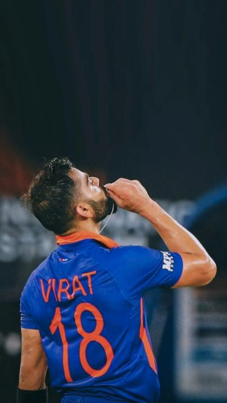

VIRAT KOHLI
My Favorite Cricketer

A photograph of Virat Kohli
Biography
Virat Kohli was born on November 5, 1988, in Delhi. He showed a deep love for cricket at age three. At nine, he joined the West Delhi Cricket Academy. A right-handed batsman and brilliant fielder, he debuted in Tests in 2011. He became India's captain in 2014.
Achievements
- 2008 - Made his senior international ODI debut for India against Sri Lanka.
- 2011 - Won the ICC Cricket World Cup with the Indian team, scoring a century in his debut World Cup match.
- 2012 - Won the prestigious ICC ODI Cricketer of the Year award.
- 2008 -
- 2008 -
- 2008 -
- 2008 -
- 2008 -
- 2008 -
- 2008 -